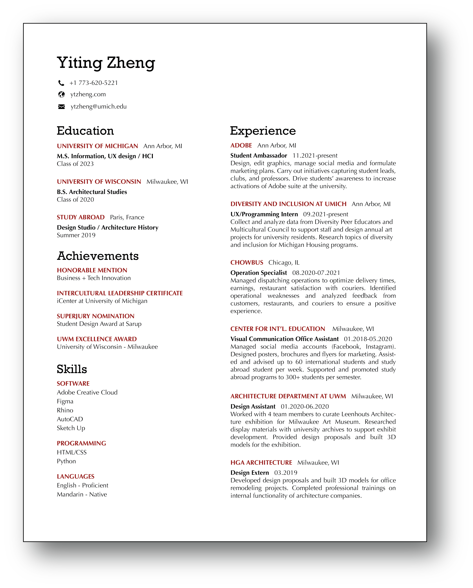

View my resume and learn more about my professional experience here.

Some of my achievements include receiving honorable mention at Business + Tech Innovation; Intercultural Leadership Certificate from International Center at University of Michigan; SuperJury nomination from Student Design Award at School of Architecture and Urban Planning at University of Wisconsin – Milwaukee; UWM Excellence Award from University of Wisconsin – Milwaukee.
Tools and languages I am sufficient in are Adobe Creative Suite, Figma, Rhino, AutoCAD, Sketch Up, Miro, Laser Cut, 3D Print, Model Making, HTML/CSS, Python My design skills include Interaction Design, UI Development, Product Design, Storyboarding, User Flows, Wireframes, Prototyping, Architectural Design, Design Systems. My research skills include User Interviews, Contextual Inquiries, Competitive Analysis, Usability Testing, Affinity Mapping, Site Analysis
Here are the organizations that I worked with: